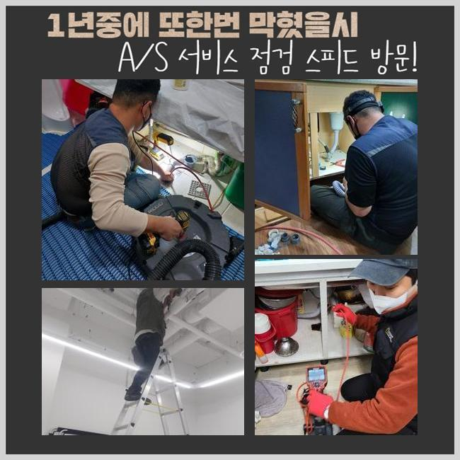
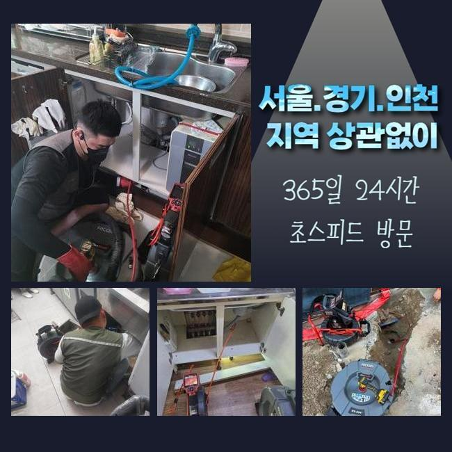
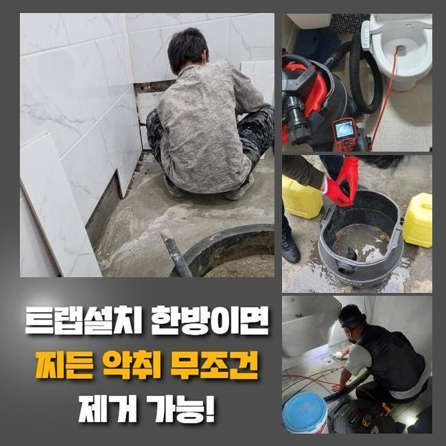
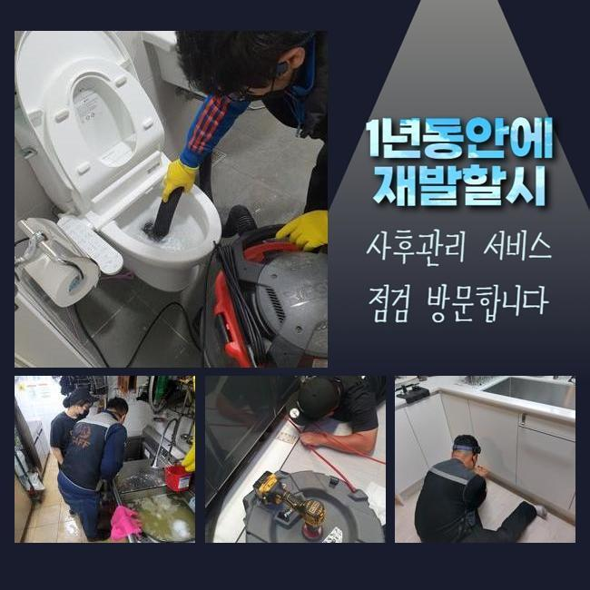
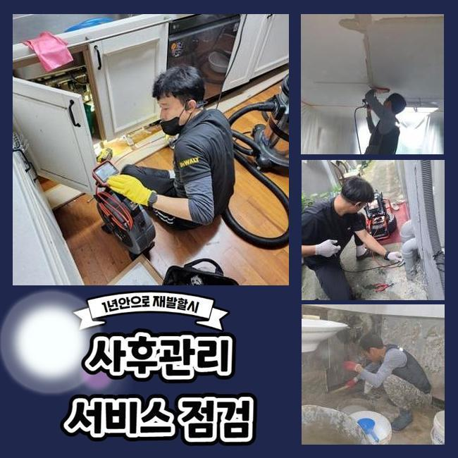
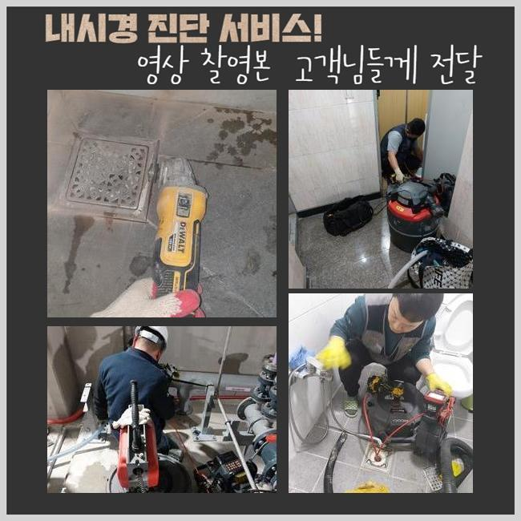
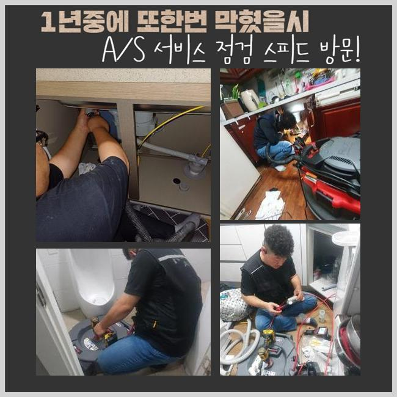

🏠 성남 율동싱크대배수구막힘 대장동 악취차단 누수공사
용인시 처인구 배관막힘 전문 시공 후기

📋 작업 개요
- 위치: 용인시 처인구, 수원시 영통구, 화성시 동탄
- 서비스 유형: 배관막힘, 하수구청소, 누수수리, 고압세척, 내시경점검
- 작업 일시:
- 업체명: 하수구수사대 (010-5615-2118)
🔍 문제 상황
성남 율동싱크대배수구막힘 대장동 악취차단 누수공사
이물 때문에 생긴 막힘 현상은 수월한 편안한 하루를 살아가는 데 심각한 어려움을 선사합니다
설상가상으로 물이 역류하기라도 한다면 내부가 엉망진창인 수준으로 될지도 모를 일입니다
이러한 난감한 사태를 완벽히 보수하는 것이 바로 저희가 하는 일입니다!
손대기 힘들도록 막막한 사태에 빠지셨다면 망설임 없이 연락해 주시길 바라요
오늘의 사례는 불현듯 막힘에다 역류까지 한꺼번에 일어나 찾아간 곳이랍니다
갑자기 생긴 문제라 느끼시겠지만 하수구문제는 장기간 생성되었던 이물질들이 결국엔 폭탄처럼 터지게 되는 건데요
각종 노폐물들이 물의 경로에 축적되어 버려서 하수관의 지름을 꽉 메워버린다면 막히는 것이죠
다양한 원리로 막힘을 다뤄낼 장치를 두루 가지고 빠르게 현장에 도착했습니다
배수관이 막혀버리면 평상 시 생활을 완전히 마비시켜버립니다
이번 케이스와 같이 화장실에서 일어난 문제면 물을 많이 반드시 써야하는 공간이 그렇다면 난감함은 더 불어납니다
그렇기에 배수관이 막히면 일상을 이어가지 못하는 불편감이 일시에 일어나기 때문에 더욱 위급하다고 봅니다
한 사람만 해도 수회 물을 폐기하기 때문에 편안한 생활을 이어가는데 허들이 생성되는 것이죠!
이런 불편함이 있기에 빠른 검사와 명확한 솔루션이 재빠르게 이뤄져야 할 것입니다

🔎 원인 분석
💡 전문가 진단: 정밀 진단 장비를 사용하여 슬러지의 고착 여부를 판명하고 타격/세척 작업을 실시했습니다.
배관고장의 주요한 까닭을 분석해봐야 하지만 피해 양상만 자세히 봐도 충분히 예측이 가능합니다
둘러본 결과로는 파이프라인에 이물질이 끼었다는 것이 강력한 원인으로 여겨졌습니다
앞서 배출됐던 하수와 오염원들이 옛날부터 고여있었다면 딱딱한 석회가 내부로 빼곡하게 뒤덮이게 됩니다
배관 경로를 체크하고 시공의 방향성을 제대로 정해줘야 했습니다
경미한 양의 석회만 붙어있는 상황이 관찰된다면 석션으로도 간소화한 방법으로 뚫음이 완수될 수 있습니다
끼인 석회가 상당량이거나 배관의 긴 부분에 강력하게 흡착되어 있다면 녹여주는 연화제를 투여해서 조금 풀어주는 게 좋아요
어느정도의 구간까지 머물러있는지를 파악해야 얼마나 연화제를 넣을지도 알게되니 미리 탐방하는 절차가 필요했어요
작업 착수를 앞두고 배관용 카메라를 넣어서 내부 조사 후 정량의 약품을 구멍으로 부었어요
이물질의 잔여 현황을 관측을 이어가보니 진심으로 심하다는 생각이 들 정도로 막힌 측면이 심해 보였어요
일부 구간에만 석회물질이 붙은 상황을 넘어서 고루 긴 배관이 석회에 압도된 상태였습니다
여기서 곧바로 스케일링 시공을 지속했다간 굳어버린 이물질로 인해 배관에 결함이 생길 수 있습니다
위험을 줄이기 위해 약물을 부어 석회화를 해소한 다음 작업을 이어나가야 합니다
약물의 양이 모자라면 효율적인 액화 작업이 까다롭고 힘들어질 것이므로 미리 확인하는 것이 중요합니다
해당 하수구에 대한 탐색을 제대로 해놓고 넘어간다면 별다른 무리 없이 제거를 해나갈 수 있습니다

🔧 작업 과정
그렇기에 모든 현장에는 내시경은 빠져서는 안되는 도구이며 반드시 필참해야만 되는 우수한 기기 일순위 입니다
시간을 넉넉히 두고 석회화가 완전히 풀릴 타이밍까지 침착하게 신중하게 지켜보았습니다
그 덕에 장비를 활용해도 배관 손상 없이 깔끔하게 제거할 수 있었죠
이 약품 덕분에 손쉽게 분리할 수 있고 공정 과정까지 부담이 적어졌기 때문입니다
손이 미치는 범위의 구간이라면 단시간에 문제를 해결할 수 있습니다
그러나 배수관은 한눈에 알아보기 힘든 깊은 구조기때문에 여러 방안을 적용해 청소 작업에 몰입해야 합니다
특히 배관 구조의 특성을 머릿속에 염두해 두어야 손상없는 제거 작업에 돌입할 수 있어요
딱딱한 강도는 벗어난 것 같다고 판단해 흘러넘치는 참사가 형성되지 않게 조심해서 청소를 계속 이어갔습니다
배관의 막힌 상황을 제대로 보완해드리려고 성능이 좋은 샤프트기를 이용하는 경우가 많습니다
이 장비는 머리에 달린 노커가 빠른 속도로 회전하며 이물질을 미세하게 파쇄하는 소임을 다하는 방식의 청소 장비입니다
부주의한 태도로 기기를 쓰면서 진행된다면 배관이 배관 몸체가 훼손당하므로 세심한 조절 능력을 갖춘 사람이 담당해야 합니다
사전에 접착도를 풀어두지 않으면 속 시원히 없애는게 힘든 상황에 맞닥뜨릴 수 있어요
곁에 계시던 고객님께서는 하수구가 다치진 않을까 상당히 노심초사 하는 모습을 보이셨습니다
본작업에 돌입하기 전에 설명을 충분히 해드리고 승인을 얻고 작업을 도맡고 있으니 우려하지 않으셔도 돼요
다행스럽게도 약물 덕분에 충분히 이물이 부드럽게 변형되어 쉽게 없앨 수 있었습니다
역류때문에 오염됐던 덮개도 전문가의 손길로 깨끗이 정리해 드렸습니다
시원스럽게 폐기가 이어지는 상황임을 인식해도 다시 한 번 통수 검사 시행을 위해 물을 받아서 배출시켜 보는데요
상당한 양의 물들을 순식간에 부어버렸는데 콸콸 소리를 내며 나아가는 것이 극명하게 드러났습니다
방해물이 자리한 영역들을 모조리 길을 내어주었기 때문에 이처럼 막히는 느낌 없이 시원스럽게 내려가게 될 것입니다
철두철미하게 배관 청소를 담당해 드렸으므로 조만간 막힐 일이 확실히 없겠지만 향후에는 석회화된 물질이 또 생성되고 말테지요!
하수배관의 경우에는 암만 깔끔하게 유지한다고 해도 어쩔 도리 없이 이물이 쌓이는 설비라는 특성이 있어요
게다가 수돗물을 많이 쓴다면 이런 막힘 문제가 자주 생성될 수 밖에는 없습니다
정해진 기간마다 배관 전반이 컨디션 체크를 시행해야 하며 장애가 없더라도 세척을 맡기시는 것을 가장 추천해 드립니다


✅ 작업 완료
배수구는 사용하는 사람의 사려 깊은 이용과 관심이 반드시 필요한 시설입니다
막힘이 발생하기 시작하는 시점에 해결한다면 재빠르고 쉽게 풀 수 있어요
간단한 기구로만 근근이 미봉책처럼 처리하면 언젠간 큰 불편이 일어날 가능성이 있습니다
물빠짐이 저조해지는 상태를 느끼시거나 그 외의 이슈가 생겼다면 저희에게 알려주세요
매우 비정상적인 상황에 부딪혔다 하더라도 저희의 지식으로 안전하게 다룰 수 있다는 것을 말씀드립니다
밤늦은 시기라도 댁으로 향할 수 있으므로 혹시 문제있으면 전화주시고 이어질 다른 포트폴리오 글도 읽어보시면 좋을 것입니다




⚠️ 하수구 배관 막힘 예방 및 관리 가이드
- ✅ 머리카락, 비닐, 물티슈 등 물에 분해되지 않는 이물질은 절대 흘려보내지 마세요.
- ✅ 기름기 많은 식기는 설거지 전 키친타올로 먼저 기름때를 닦아내세요.
- ✅ 주기적으로 배수구에 뜨거운 물을 가득 부어주어 유지방 고착을 방지하세요.
- ✅ 작업 후 1년 이내 재발 시 무상 A/S 보증 서비스를 제공합니다.
💡 핵심 정리
- 확실한 장비 작업(내시경 점검 및 샤프트 스케일링)으로 원인을 뿌리 뽑습니다.
- 작업 후 1년 이내에 동일한 부위 재발 시 100% 무상 A/S 서비스를 보장합니다.
- 서울 · 경기 · 인천 전 지역에 24시간 언제든 긴급 출동할 수 있도록 항시 대기 중입니다.
❓ 자주 묻는 질문 (FAQ)
🚨 용인시 처인구 배관막힘 문제로 고민이신가요?
정확한 원인 진단과 확실한 시공으로 재발 없는 해결을 약속드립니다.
24시간 긴급 출동 | 서울 · 경기 · 인천 전지역 | 1년 내 재발 시 무상 A/S